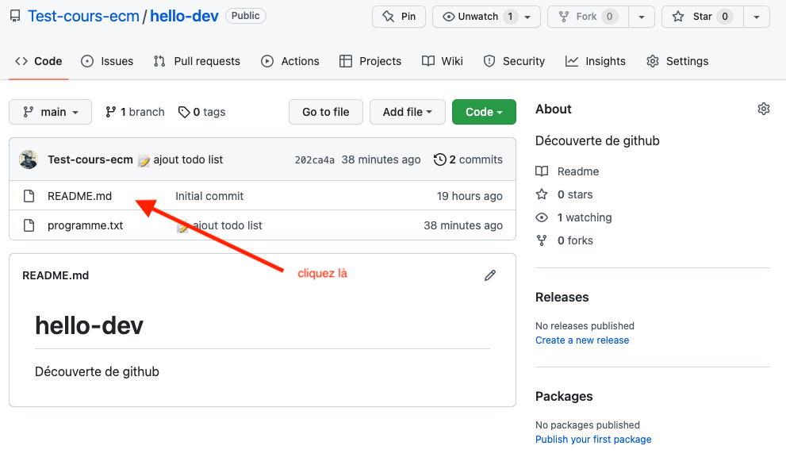
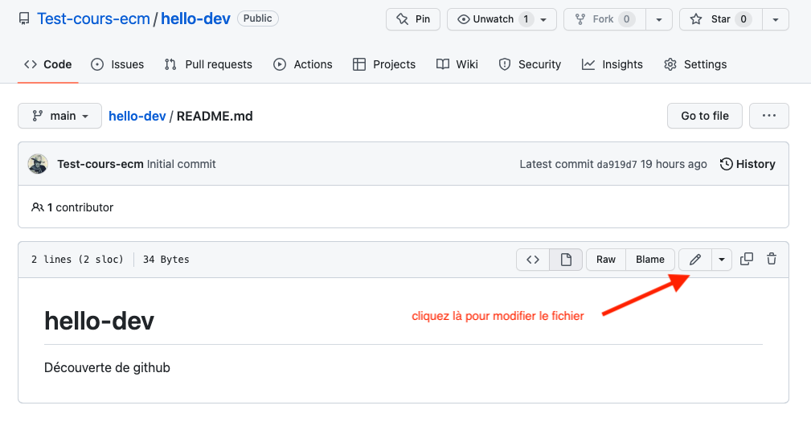
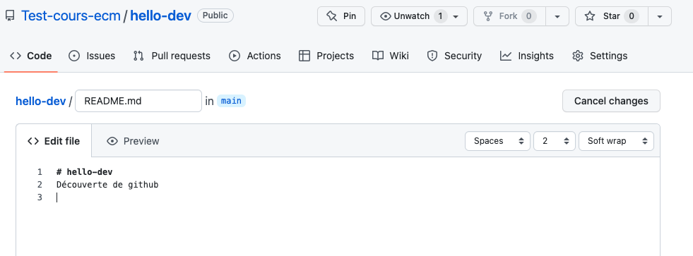
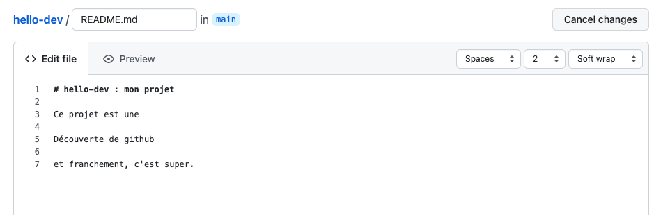
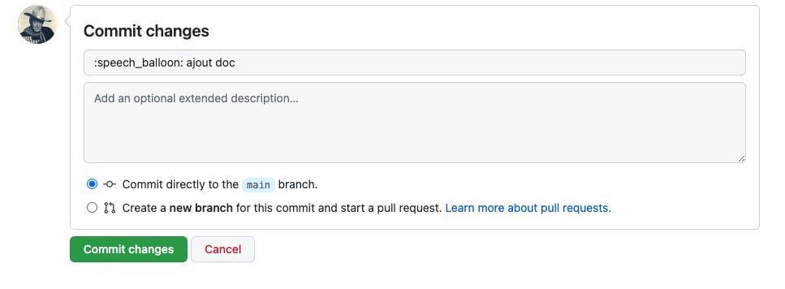
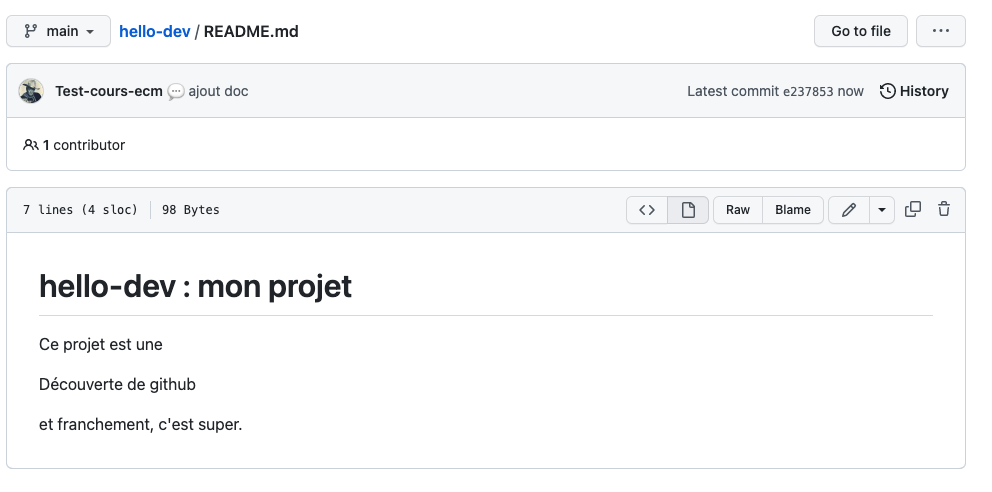
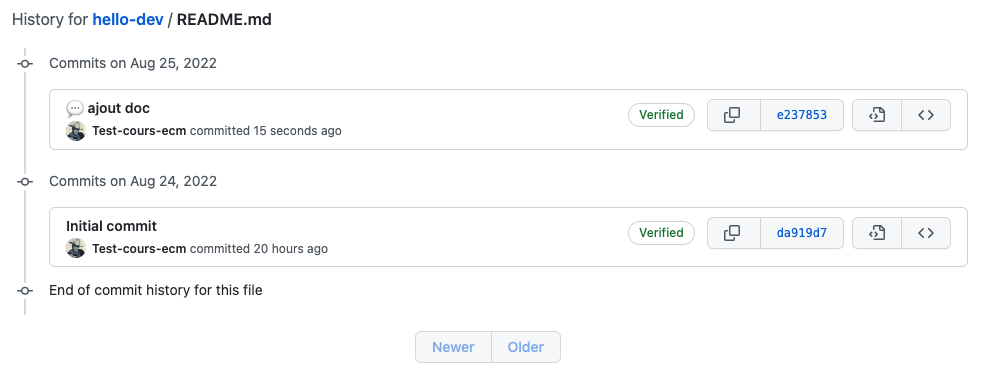
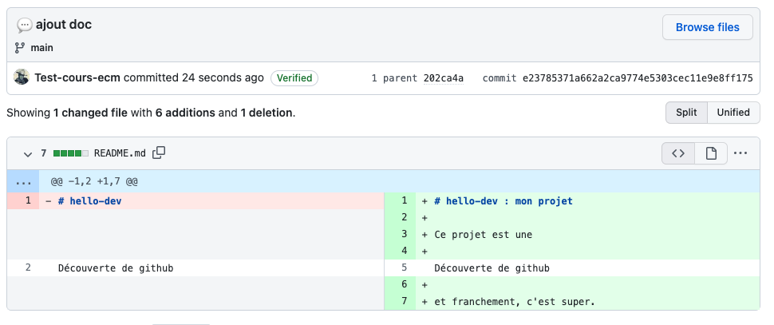

Projet github : commits
Nous allons maintenant modifier le fichier readme.md qui est aussi un fichier texte écrit au format Markdown. Pour que ce fichier soit agréable à la lecture, github le compile en html, mais — en vrai — c'est juste du texte.
Modification du fichier readme




On peut maintenant le commit :

- Notre fichier modifié est maintenant

- Son historique montre qu'il a été modifié par 2 commit

- Le dernier commit a modifié son contenu

L'index qui permet de voir les différences entre ce qu'on a sauvegarder et ce qu'on va ajouter. L'index est transparent pour l'instant mais plus on progressera plus il sera visible.